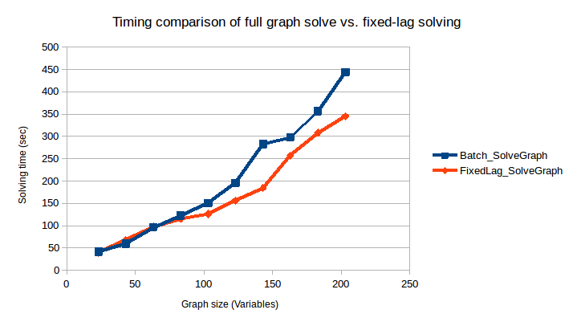

Hexagonal 2D with Fixed-Lag Solving
This is an experimental feature that is currently being developed. This example provides an overview of how to enable it and the benefits of using fixed-lag solving. The objective is to provide a near-constant solve time for ever-growing graphs by only recalculating the most recent portion. Think of this as a placeholder, as we develop the solution this tutorial will be updated to demonstrate how that is achieved.
Example Code
The complete code for this example can be found in the fixed-lag branch of RoME: Hexagonal Fixed-Lag Example.
Introduction
Fixed-lag solving is enabled when creating the factor-graph. Users provide a window–-the quasi fixed-lag constant (QFL)–-which defines how many of the most-recent variables should be calculated. Any other variables are 'frozen.' The objective of this example is to explore providing a near-constant solve time for ever-growing graphs by only recalculating the most recent portion.
Example Overview
In the example, the basic Hexagonal 2D is grown to solve 200 variables. The original example remains the same, i.e., a vehicle is driving around in a hexagon and seeing the same bearing+range landmark as it crosses the starting point. At every 20th variable, a solve is invoked. Rather than use solveTree!(fg), the solve is performed in parts (construction of Bayes tree, solving the graph) to get performance statistics as the graph grows.
numVariables = 200
solveEveryNVariables = 20
lagLength = 30
# Standard Hexagonal example for totalIterations - solve every iterationsPerSolve iterations.
function runHexagonalExample(fg::G, totalIterations::Int, iterationsPerSolve::Int)::DataFrame where {G <: AbstractDFG}
# Add the first pose :x0
addVariable!(fg, :x0, Pose2)
# dummy tree used later for incremental updates
tree = wipeBuildNewTree!(fg)
# Add at a fixed location PriorPose2 to pin :x0 to a starting location
addFactor!(fg, [:x0], PriorPose2(MvNormal(zeros(3), 0.01*Matrix{Float64}(LinearAlgebra.I, 3,3))))
# Add a landmark l1
addVariable!(fg, :l1, Point2, labels=[:LANDMARK])
# Drive around in a hexagon a number of times
solveTimes = DataFrame(GraphSize = [], TimeBuildBayesTree = [], TimeSolveGraph = [])
for i in 0:totalIterations
psym = Symbol("x$i")
nsym = Symbol("x$(i+1)")
@info "Adding pose $nsym..."
addVariable!(fg, nsym, Pose2)
pp = Pose2Pose2(MvNormal([10.0;0;pi/3], Matrix(Diagonal( [0.1;0.1;0.1].^2 ) )))
@info "Adding odometry factor between $psym -> $nsym..."
addFactor!(fg, [psym;nsym], pp )
if i % 6 == 0
@info "Creating factor between $psym and l1..."
p2br = Pose2Point2BearingRange(Normal(0,0.1),Normal(20.0,1.0))
addFactor!(fg, [psym; :l1], p2br)
end
if i % iterationsPerSolve == 0 && i != 0
@info "Performing inference!"
if getSolverParams(fg).isfixedlag
@info "Quasi fixed-lag is enabled (a feature currently in testing)!"
fifoFreeze!(fg)
end
tInfer = @timed tree, smt, hist = solveTree!(fg, tree)
graphSize = length([ls(fg)[1]..., ls(fg)[2]...])
push!(solveTimes, (graphSize, tInfer[2], tInfer[2]))
end
end
return solveTimes
endTwo cases are set up:
- One solving the full graph every time a solve is performed:
# start with an empty factor graph object
fg = initfg()
# DO NOT enable fixed-lag operation
solverTimesForBatch = runHexagonalExample(fg, numVariables, solveEveryNVariables)- The other enabling fixed-lag with a window of 20 variables:
fgFixedLag = initfg()
fgFixedLag.solverParams.isfixedlag = true
fgFixedLag.solverParams.qfl = lagLength
solverTimesFixedLag = runHexagonalExample(fgFixedLag, numVariables, solveEveryNVariables)The resultant path of the robot can be seen by using RoMEPlotting and is drawn if the visualization lines are uncommented:
#### Visualization
# Plot the many iterations to see that it succeeded.
# Batch
# drawPosesLandms(fg)
# Fixed lag
# drawPosesLandms(fgFixedLag)Lastly, the timing results of both scenarios are merged into a single DataFrame table, exported to CSV, and a summary graph is shown using GadFly.
using Gadfly
using Colors
using CSV
# Make a clean dataset
rename!(solverTimesForBatch, :TimeBuildBayesTree => :Batch_BayedBuild, :TimeSolveGraph => :Batch_SolveGraph);
rename!(solverTimesFixedLag, :TimeBuildBayesTree => :FixedLag_BayedBuild, :TimeSolveGraph => :FixedLag_SolveGraph);
timingMerged = DataFrames.join(solverTimesForBatch, solverTimesFixedLag, on=:GraphSize)
CSV.write("timing_comparison.csv", timingMerged)
PP = []
push!(PP, Gadfly.layer(x=timingMerged[:GraphSize], y=timingMerged[:FixedLag_SolveGraph], Geom.path, Theme(default_color=colorant"green"))[1]);
push!(PP, Gadfly.layer(x=timingMerged[:GraphSize], y=timingMerged[:Batch_SolveGraph], Geom.path, Theme(default_color=colorant"magenta"))[1]);
plt = Gadfly.plot(PP...,
Guide.title("Solving Time vs. Iteration for Fixed-Lag Operation"),
Guide.xlabel("Solving Iteration"),
Guide.ylabel("Solving Time (seconds)"),
Guide.manual_color_key("Legend", ["fixed", "batch"], ["green", "magenta"]))
Gadfly.draw(PNG("results_comparison.png", 12cm, 15cm), plt)Results
Preliminary results for the comparison can be seen below. However, this is just a start and we need to perform more testing. At the moment we are working on providing consistent results and further improving performance/flattening the fixed-lag time. It should be noted that the below graph is not to demonstrate the absolute solve time, but rather the relative behavior of full-graph solve vs. fixed-lag.

NOTE Work is underway (aka "Project Tree House") to reduce overhead computations that result in poorer fixed-lag solving times. We expect the fixed-lag performance to improve in the coming months (Written Nov 2018). Please file issues if a deeper discussion is required.
Additional Example
Work In Progress, but In the mean time see the following examples:
https://github.com/JuliaRobotics/Caesar.jl/blob/master/examples/wheeled/racecar/apriltagandzed_slam.jl